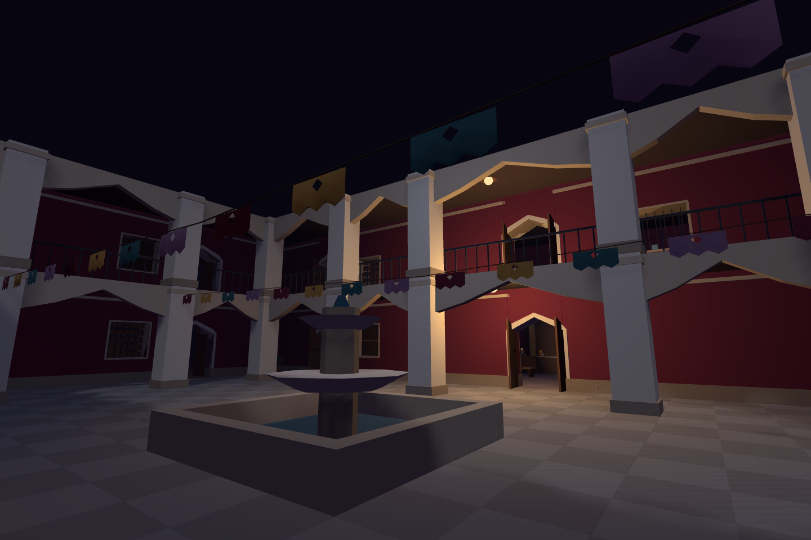
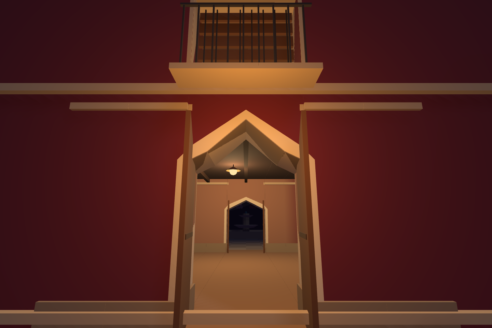
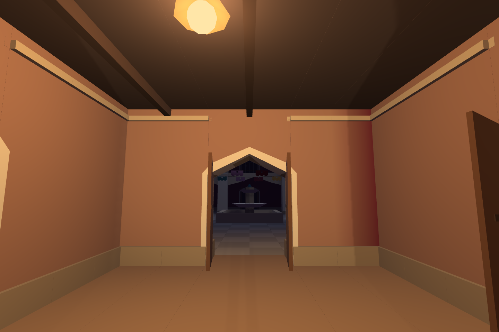
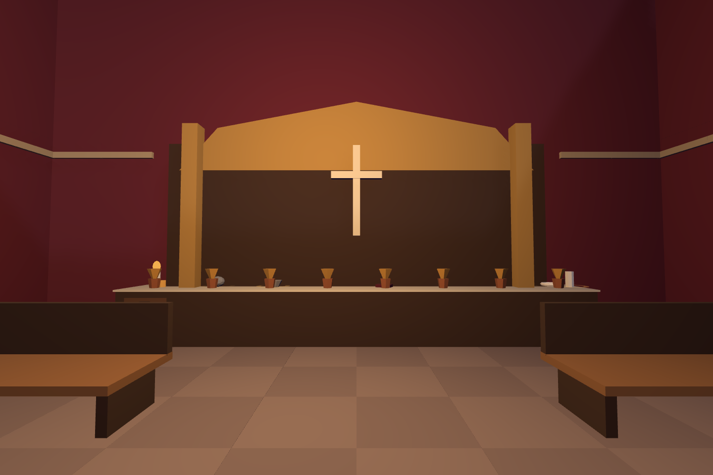
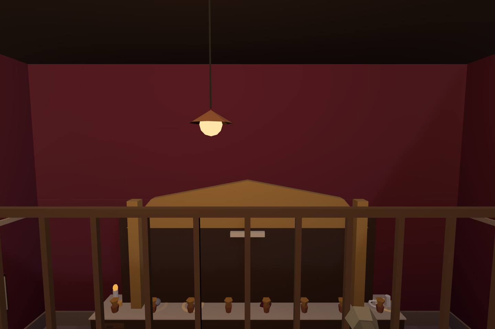
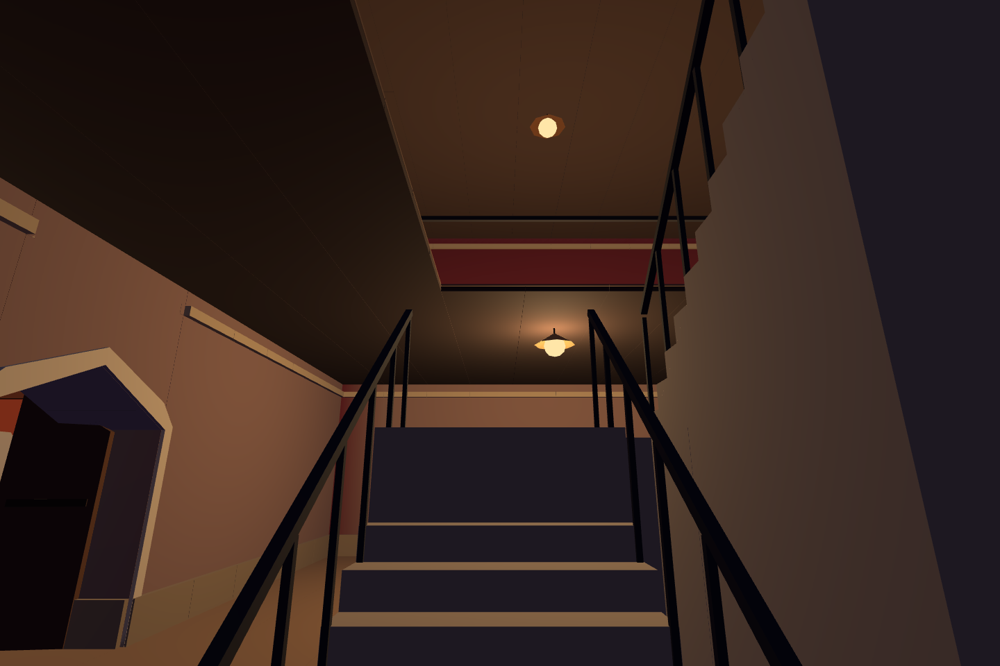
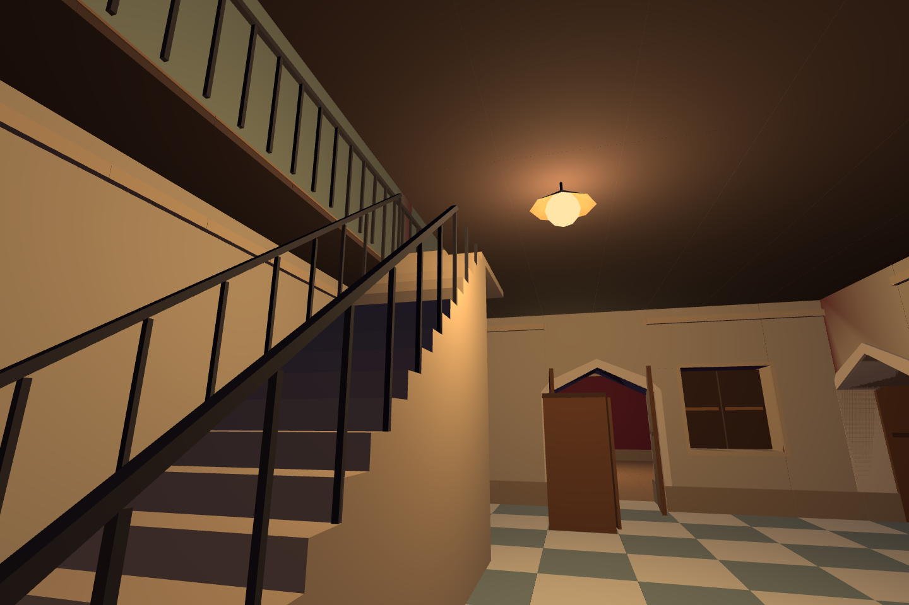
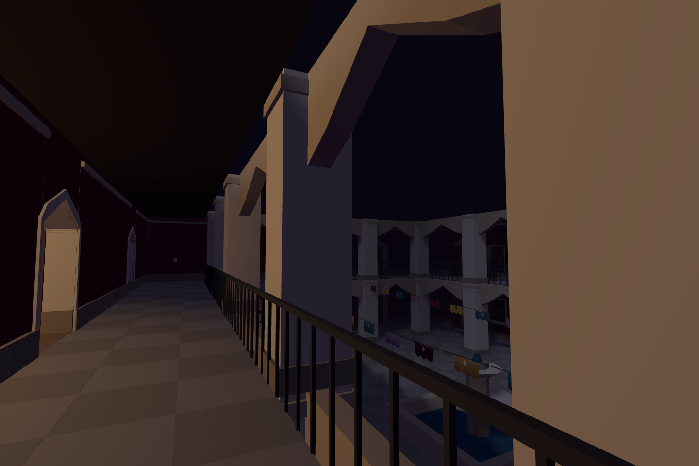

NOCHE DE ÁNIMAS · RECONSTRUCCIÓN V11
Una casona construida para recorrerla
Dos plantas, patio con galería, capilla a doble altura y dos escaleras. La arquitectura y las colisiones siguen el mismo plano, con muebles y ventanas propios de cada zona.
Capturas reales del juego con luces encendidas para revisar el escenario. La iluminación cambia durante la partida. Personajes y animaciones aprobados conservados.

Patio: cuatro lados de arquerías, galería superior y fuente central.

Portón y balcón central. Los vanos y las hojas comparten el mismo perfil.

Entrada y conexión con el circuito de la planta baja.
Capilla y coro

Un único retablo arquitectónico, bancas y nave a doble altura.

Coro abierto sobre la nave, con su barandal.
Conexiones entre plantas

Escalera principal en U, con descanso y hueco en el entrepiso.

Escalera de servicio: segundo recorrido entre cocina y planta alta.

Galería: continuidad del circuito superior alrededor del patio.
Plano de referencia aprobado
Esquemas del diseño v11. Los muebles y puntos de aproximación recibieron ajustes durante la construcción.
Verificado
Acceso a los 22 cuartos, ambas escaleras en ambos sentidos, cobertura de escondites, puertas y visión, colocación de objetos y sincronización entre dos navegadores. Cuatro perfiles de calidad y pantalla móvil emulada.
Quedan por medir los FPS en celulares físicos y afinar el balance mediante partidas humanas.